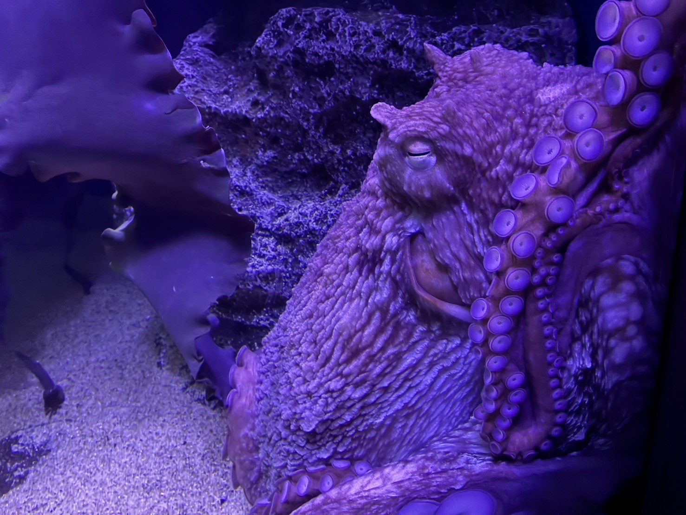

⭐ 江ノ島水族館



新江ノ島水族館（えのすい）は、相模湾と太平洋の生物をテーマに
した、体験型のエデュテインメント水族館です。相模湾大水槽やイ
ルカショー、クラゲ展示など、見どころ満載で、訪れる人々を楽し
ませています。特に、相模湾の多様な生態系を再現した相模湾ゾー
ンは人気で、大水槽では約2万匹の魚たちが優雅に泳ぐ姿を観察でき
ます。
営業時間：
5月7日（水）～7月11日（金）
9:00～17:00（16:00）
※()を最終入場時間